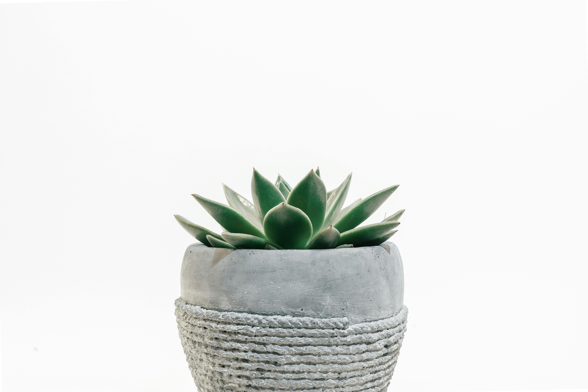

Dampak Positif Penggunaan Produk kertas
Ramah Lingkungan Lembaran Alam
Penurunan
Deforestasi
Dengan penggunaan kertas berbahan dasar rumput, kita mengurangi ketergantungan terhadap kayu dan mencegah penebangan pohon berlebih, membantu menjaga ekosistem hutan.
Efisiensi
Sumber Daya
Kertas dari rumput membutuhkan lebih sedikit air, energi, dan bahan kimia dalam proses produksinya dibandingkan kertas konvensional, sehingga lebih hemat dan ramah lingkungan.
Pengelolaan Limbah Organik
Rumput sebagai bahan baku sering berasal dari sisa limbah pertanian yang tidak terpakai
sehingga dapat memaksimalkan penggunaan sumber daya dan mendukung ekonomi berkelanjutan.
Beberapa artikel yang berkaitan tentang rumput



About